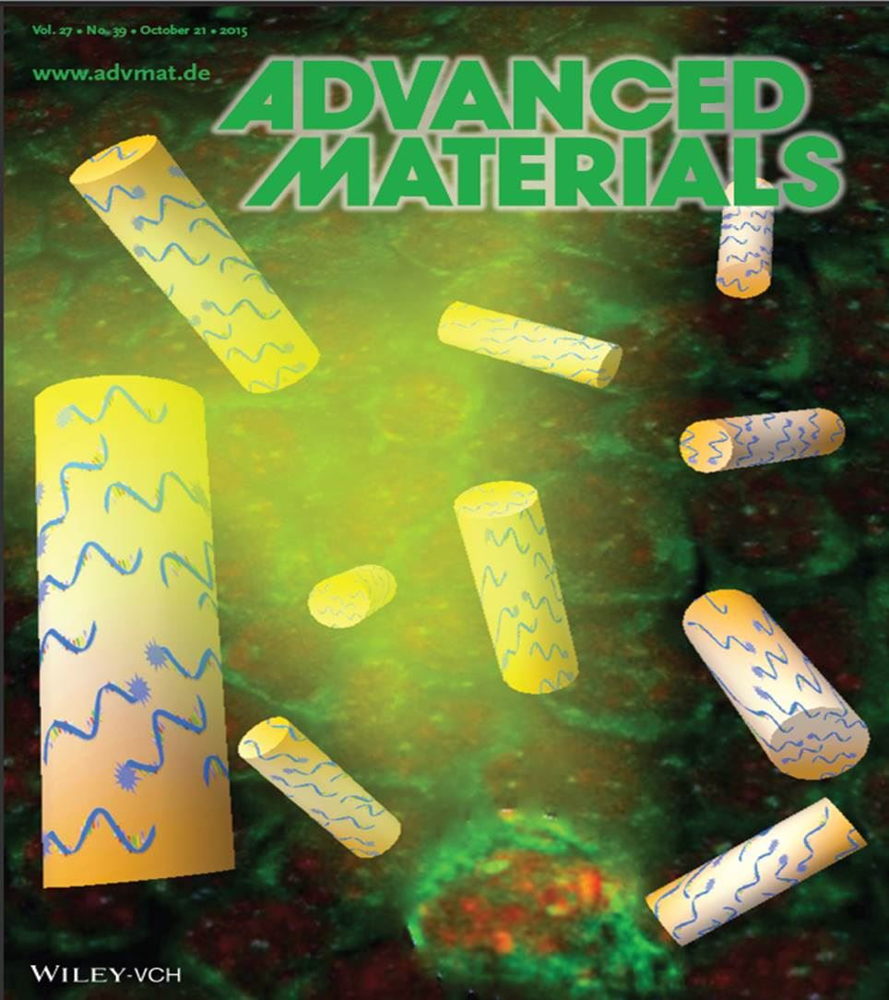

Cover Images


Journal Papers
- S. Wang, N.J. Emery, A.P. Liu, A novel synthetic toehold switch for microRNA detection in mammalian cells, ACS Synthetic Biology, Vol. 8(5), 1079-1088, 2019. (PDF)
- S. Wang, N. Emery, A. Liu. Simultaneous monitoring of transcription and translation in mammalian cell-free expression in bulk and in cell-sized droplets, Synthetic Biology, Vol. 3 (1), pp. 1-9, 2018. (PDF)
- S. Wang, Y. Xiao, D. D. Zhang, and P. K. Wong. A gapmer aptamer nanobiosensor for real-time monitoring of transcription and translation in single cells, Biomaterials, Vol. 156, pp. 56-64, 2018. (PDF)
- Y. Zheng*, S. Wang*, X. Xue, A. Xu, W. Liao, A. Deng, A. Liu, and J. Fu. Notch signaling in regulating angiogenesis in a 3D biomimetic environment, Lab on a Chip. Vol. 17, pp. 1948-1959, 2017. (Featured as back cover article, * equal contribution) (PDF)
- S. Wang*, J. Sun*, Y. Xiao*, Y. Lu, D. D. Zhang, and P. K. Wong. Intercellular tension negatively regulates angiogenic sprouting of endothelial tip cells via Notch1-Dll4 signaling, Advanced Biosystems. Vol. 1, 1600019, 2017. (PDF)
- S. Wang, J. Sun, D. D. Zhang, and P. K. Wong, A nanobiosensor for dynamic single cell analysis during microvascular self-organization, Nanoscale. Vol. 8 (38), pp.16894-16901, 2016. (Featured as cover article) (PDF)
- S. Wang, R. Riahi, D.D. Zhang, and P. K. Wong. Single cell nanobiosensor for dynamic gene expression profiling in native tissue microenvironments, Advanced Materials. Vol. 27, pp. 6034-6038, 2015.(Featured as cover article) (PDF)
- R. Riahi, J. Sun, S. Wang, M. Long, D.D. Zhang, and P. K. Wong. Dll4 signaling and mechanical force regulate leader cell formation during collective cell migration, Nature Communications. Vol.6, 6556, 2015. (PDF)
- J. Sun*, Y. Xiao*, S. Wang*, M. J. Slepian, and P. K. Wong. Advances in techniques for probing mechanonregulation of tissue morphogenesis, Journal of Laboratory Automation. Vol. 20(2), pp.127–137, 2015. (* equal contribution) (PDF)
- R. Riahi, S. Wang, M. Long, N. Li, P.-Y. Chiou, D. D. Zhang, and P. K. Wong. Mapping photothermally induced gene expression in living cells and tissues by nanorod-locked nucleic acid complexes, ACS Nano. Vol. 8, pp. 3597-3605, 2014. (PDF)
- S. Tao, S. Wang, S. J. Moghaddam, A. Ooi and E. Chapman, P. K. Wong and D. D. Zhang, Oncogenic KRAS confers chemoresistance by transcriptional upregulation of NRF2 via the TPA response element, Cancer Research. Vol. 74, pp. 7430-7441, 2014. (PDF)
- W. F. Liang, S. Wang, Z. L. Dong, G. B. Lee, W. J. Li. Optical spectrum and electric field waveform dependent optically-induced dielectrophoretic (ODEP) micro-manipulation, Micromachines. Vol.3(2), pp. 492-508, 2012. (PDF)
- S. Wang, W. F. Liang, Z. L. Dong, G. B. Lee, W. J. Li. Fabrication of micrometer- and nanometerscale polymer structures by visible light induced dielectrophoresis (DEP) force, Micromachines. Vol. 2(4), pp. 431-442, 2011. (PDF)
- S. Wang, Y. L. Qu, Z. L. Dong, L. Zhou, Z. Liu. Automatically manipulation of polystyrene beads via optically induced Dielectrophoresis, Micronanoelectronic Technology. Vol. 48(2), pp. 132-137, 2011.
- S. Wang, Y. L. Qu, Z. L. Dong, Y. Yang, L. Zhou. Fabrication of gold nanoparticle based sensors using DEP technologies. Micronanoelectronic Technology. Vol. 48(12), pp. 809-815, 2011.
Conference Proceedings/Abstracts
- S. Wang, N. Emery, A. Liu. A novel synthetic toehold switch for microRNA detection in mammalian cells, Biomedical Engineering Society (BMES), Phoenix, USA, Oct. 11-14, 2017.
- S. Wang, N. Emery, A. Liu. Engineering synthetic toehold switch for monitoring single cell microRNA activity, Biomedical Engineering Society (BMES), Minneapolis, USA, Oct. 5-8, 2016.
- S. Wang, R. Riahi, P. K. Wong. A multimodal gold nanorod-locked nucleic acid approach for probing individual cell gene expression in living tissues, The 18th International Conference on Miniaturized Systems for Chemistry and Life Sciences, MicroTAS, San Antonio, USA, Oct. 26-30, 2014.
- S. Wang, R.Riahi, P. K. Wong. Probing single cell gene expression dynamics for tissue morphogenesis, The 8th IEEE International Conference on Nano/Molecular Medicine and Engineering, IEEE NanoMed, Kaohsiung, Taiwan, Nov. 11-14, 2014.
- S. Wang, R. Riahi, P. K. Wong. A multimodal gold nanorod-locked nucleic acid approach for probing tissue morphogenesis, Society for Laboratory Automation and Screening, SLAS, San Diego, USA, Jan. 22-26, 2014.
- S. Wang, W. F. Liang, Y. L. Qu, Z. L. Dong, G. B. Lee, and W. J. Li. Towards automated micro/nano scale manipulation, separation, assembly, and fabrication by optically-induced Dielectrophoresis, The 1st IEEE International Conference on Robotics and Biomimetics, IEEE ROBIO, Phuket,Thailand, Dec. 7-11, pp. 2403-2404, 2011.
- S. Wang, Z. L. Dong, Y. L. Qu, G. B. Lee, and W. J. Li. Deposition of carbon nanoparticles using optically induced Dielectrophoretic force, The 16th International Solid-State Sensors, Actuators and Microsystems Conference, TRANSDUCERS, Beijing, China, Jun. 5-9, pp. 1268-1271, 2011.
- S. Wang, Z. L. Dong, Y. L. Qu, L. Zhou, Z. Liu, W. L. Zhou, S. L. Jiang, Y. Yu, G. B. Lee, and W. J. Li. Development of a novel ODEP chip using polymer photoconductive material and FTO electrode, The 6th IEEE International Conference on Nano/Micro Engineered and Molecular Systems, IEEE NEMS, Kaohsiung, Taiwan, Feb. 20-23, pp. 275-280, 2011.
- W. F. Liang, S. Wang, Y. L. Qu, Z. L. Dong, G. B. Lee, W. J. Li. An equivalent electrical model for numerical analyses of ODEP manipulation, The 6th IEEE International Conference on Nano/Micro Engineered and Molecular Systems. IEEE NEMS, Kaohsiung, Taiwan, Feb. 20-23, pp. 825-830,2011.
- S. Wang, M. L. Li, Z. L. Dong, Y. L. Qu, Wen J. Li. Comparing ODEP and DEP forces for micro/nano scale manipulation: a theoretical analysis, The 5th IEEE International Conference on Nano/Micro Engineered and Molecular Systems, IEEE NEMS, Xiamen, China, Jan. 20-23, pp. 1174-1179, 2010.